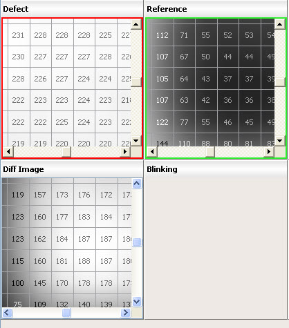

You can find
the intensity value per pixel of an image in the Image Measurement
window by overlaying gray level values onto that image.
Procedure
- In the IMU toolbar, click
the GL Matrix Overlay button.
Figure 1. GL
Matrix Overlay Button
- The gray level values are
overlaid on the image, as shown in Figure 2.
Figure 2. Visible GL Matrix
on the Image
Note: The current
state of the Overlay option
is retained when navigating between defects.
- The GL
Matrix can be seen only after a certain zoom level. Zoom in on the
image if the GL Matrix does not appear after enabling GL Matrix
Overlay.
- The GL Matrix is not available
for the following images: Binary, Inverted Binary, Inverted, Defect
Threshold Image, Reference Threshold Image, Defect Edge Image, and Reference
Edge Image.
- The overlay option automatically
zooms in on images with reference to the Defect and Reference images
so that the GL Matrix can be seen on both.
Note: The GL Matrix Overlay can also be enabled by
right-clicking the IMU’s image and selecting GL Matrix > Overlay.